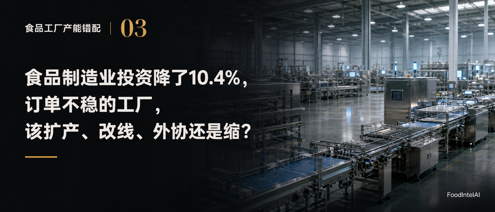

1—8月实际增加值同比
1—8月固定资产投资同比
1—2月固定资产投资同比
| 累计期间 | 食品制造业投资同比 | 农副食品加工业投资同比 |
|---|---|---|
| 2026年1—2月 | +4.7% | +11.2% |
| 2026年1—5月 | −6.5% | +0.5% |
| 2026年1—7月 | −9.4% | −3.0% |
| 2026年1—8月 | −10.4% | −2.0% |
| 方案 | 更适合的情形 | 主要风险 | 先问一句 |
|---|---|---|---|
| 扩产 | 需求有可靠依据，关键能力持续不足，现有改善做完仍不够 | 投资过早，利用率不足，固定成本上升 | 订单是确认的，还是预测的？ |
| 改线、改造 | 总体能力够，但瓶颈、工艺或产品适配有问题 | 效果不及预期，影响在产 | 瓶颈到底卡在哪一道？ |
| 外协 | 需求波动大、峰值高，自建投资大，外部质量和交期可控 | 依赖外部，质量一致性，法律责任 | 峰值多高，多久来一次？ |
| 缩减、退出 | 长期需求没有支撑，保有能力的成本合理不了 | 退出成本，恢复能力丧失 | 需求恢复有可信依据吗？ |
| 新增产能被订单填满的比例 | 年新增贡献 | 静态回收期 |
|---|---|---|
| 100% | 216万元 | 1.4年 |
| 60% | 129.6万元 | 2.3年 |
| 30% | 64.8万元 | 4.6年 |
| 情形 | 优先比较 |
|---|---|
| A 需求明确增长，瓶颈持续满负荷 | 瓶颈改善、柔性扩容、新增专用产能的经济性 |
| B 总体产能有余，特定产品交不了货 | 产品适配、工序节拍、换线清洗、关键设备能力 |
| C 订单波动大，峰值远高于常态 | 常态产能、柔性产能、外协、库存策略，别为短期峰值配长期固定资产 |
| D 长期需求走弱，设备持续闲置 | 产品调整、生产集中、委外、资产处置，别无限期等待 |